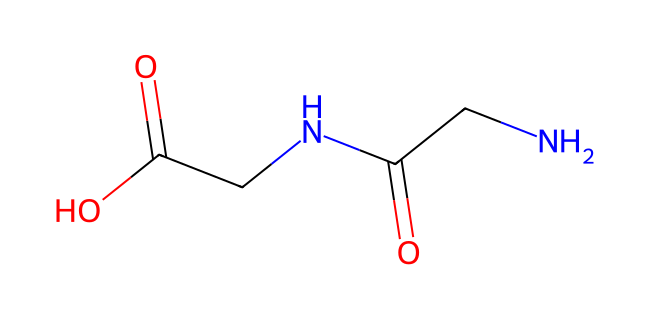
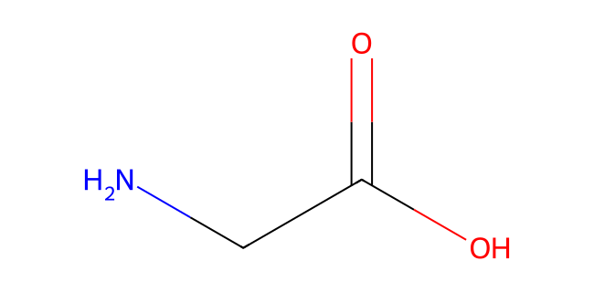

Peptide entry, hydrolysis and amino-acid exit
Untouched observed anatomy and a separate chemical/amount ledger. No molecule is tracked or painted across source pixels.

Source mouse SEM: BBM apical brush-border membrane, BLM basolateral membrane, Nucl nucleus; original4µmbar. Its round profiles are cytosolic lipid droplets, not peptide symbols.
Prepared mouse proximal enterocyte,4h after corn-oil/cholesterol gavage, freeze-fracture SEM. Individual carrier proteins and transport events are not resolved.
Soayfane et al.(2016),Nutr Metab13:48,Figure2A, owning source · CC BY4.0. Source pixels/bar retained. Preparation and extraction.
Separate controlled mechanism
Six amino-acid-residue equivalents are conserved; chemical molecule count changes on hydrolysis. Linear interpolation connects idealized snapshots for teaching. Twelve presentation seconds do not represent biological time; this is not a cell-inventory,concentration,flux or clinical model.
Before entry


Common bar scale0–6 residue equivalents
Chemical identities above; coefficients and locations follow in the ordered states.
Ordered mechanism states
| State | Lumen | Cell | Interstitium |
|---|---|---|---|
| Before entry | 3 dipeptides | 0 | 0 |
| PEPT1 entry | 0 | 3 dipeptides | 0 |
| Cell hydrolysis | 0 | 6 amino acids | 0 |
| Basolateral exit | 0 | 0 | 6 amino acids |
PEPT1 entry is H⁺-coupled; no universal H⁺ ratio is imposed. Three intracellular dipeptide hydrolyses use three water equivalents. Basolateral amino-acid transport is a separate exit, not an observed channel in the image. Free amino acids also have luminal entry routes. Neutral chemical formulas do not specify cell pH or3D conformation.
3 Gly–Gly + 3 H₂O → 6 glycine; six residue equivalents persist.
Chosen route: three glycylglycine equivalents enter by H⁺-coupled PEPT1, then intracellular peptidases hydrolyse three peptide bonds using three water equivalents, yielding six glycine equivalents. Basolateral amino-acid transport releases those products into interstitium. H⁺ quantities and individual basolateral carrier subtypes are not imposed. Dietary free amino acids have additional entry routes; not all protein enters as dipeptides.
The chemical graphs are neutral canonical connectivity depictions, not cytoplasmic protonation states,3D conformations or the GlySar used in the cited mouse transport experiment. Blood vessels receive amino acids downstream; no capillary is drawn or observed in this SEM.
Starts paused. Play is explicit, including with reduced-motion preference; changes to preference, page hiding and printing pause. Replay resets paused; seek/step pause. Source images and chemical graphs enlarge separately with Native/Fit, keyboard panning and focus return.
Mechanism evidence: Hu et al.(2009),Pept1-null mouse absorption; Hellier et al.(1972),human dipeptide absorption; PubChem glycylglycine11163 and glycine750. Original RDKit2D graphs from molecular facts, not copied artwork. State/source/reproduction record.